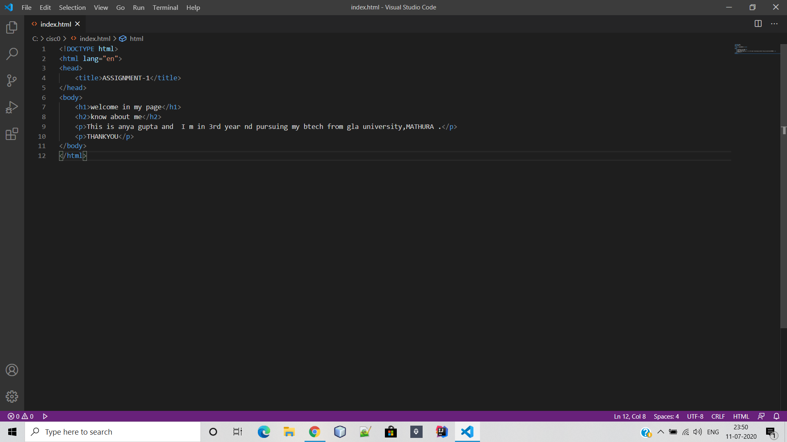
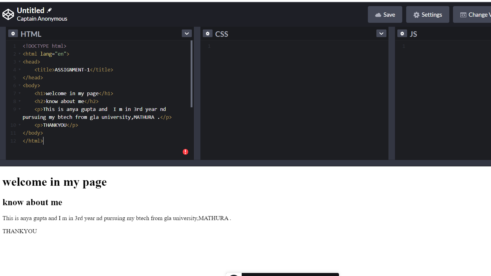

Front-end web development is everything involved in programming the user of a web application.Typically it refers to the Hypertest Markup Langauge(HTML).Cascading Style sheets (CSS) and Javascript portion of web site production as opposed to the database or server-side programming.It encompasses everything from building a simple page of HTML text to creating complex,responsive HTNL5 websites designed to be accessed via varios different browsers,devuces and screen sizes.
Offline HTML Editor
Online HTML Editor
